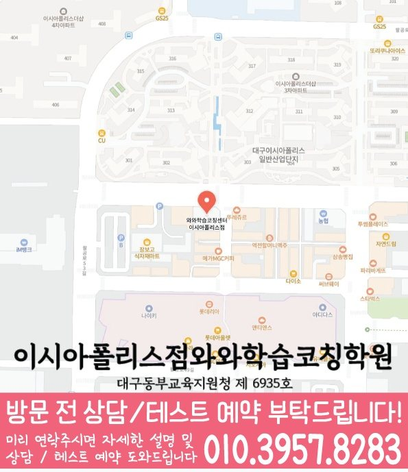

수와 연산의 뜻
계산한 답을 보기 전에 어떤 수를 구하는 문제인지 말해 보세요. 식을 고른 이유를 설명하기 어렵다면 구체적인 그림이나 간단한 예로 돌아갑니다.
공부 방법
봉무동 학생을 위한 초등 수학 공부 안내입니다. 수 감각·연산·문장제 중심으로 어려운 부분과 다음 복습을 정리해 보세요. 와와학습코칭학원 이시아폴리스점의 수강 학년과 과목별 조건은 지점 안내에서 확인할 수 있습니다.
계산한 답을 보기 전에 어떤 수를 구하는 문제인지 말해 보세요. 식을 고른 이유를 설명하기 어렵다면 구체적인 그림이나 간단한 예로 돌아갑니다.
틀린 답만 지우지 말고 오류가 생긴 줄을 표시하세요. 자릿값, 계산 순서, 단위 가운데 놓친 내용을 확인하고 같은 실수가 반복되는지 살펴봅니다.
문제에서 아는 것과 구할 것을 나눠 표시한 뒤 그림이나 식으로 옮겨 보세요. 수치가 달라져도 같은 관계를 설명할 수 있는지 확인합니다.
| 살펴볼 기록 | 다음 공부 | 확인할 내용 |
|---|---|---|
| 식을 고르기 어려움 | 그림으로 수의 관계 나타내기 | 식이 필요한 이유 설명 |
| 계산 도중 오류 | 실수한 줄과 단위 표시 | 풀이를 다시 확인해 수정 |
| 문장 뜻을 놓침 | 주어진 조건과 질문 구분 | 그림과 식을 연결해 설명 |
학생이 스스로 공부를 정리하기 위한 일반적인 방법입니다. 지점의 실제 수업·평가·숙제 운영을 뜻하지 않습니다.
봉무동에서 초등 수학 공부를 준비한다면 학교 진도와 현재 사용하는 교재, 혼자 해 본 기록을 함께 정리해 보세요. 틀린 문제와 풀이가 멈춘 과정을 표시합니다.
학교명은 제공된 지역 자료의 참고 목록입니다. 학교 전담반·제휴·모든 학교의 내신 지도를 의미하지 않습니다.
대구 동구 팔공로51길 33 A-503호 와와학습코칭학원
초등 수학 안내: 초1~초6
와와학습코칭학원 이시아폴리스점의 초등 수학 기본 안내 학년은 초1~초6입니다. 현재 수강 가능 여부와 시간표는 상담에서 확인해 주세요.
과목별 예외 조건과 현재 개설 여부는 봉무동 초등 수학 수강 조건에서 먼저 확인해 주세요.
먼저 수와 연산의 뜻을 이해했는지, 식은 맞지만 계산 과정에서 실수했는지 나누어 보세요. 문제 뜻을 해석하기 어려운 경우에는 그림과 식의 관계를 설명하는 연습부터 시작할 수 있습니다.
맞힌 개수와 함께 혼자 설명한 내용, 도움 없이 다시 해결한 부분을 기록해 보세요. 같은 방식으로 모든 문제를 반복하기보다 아직 막히는 부분을 다음 복습으로 연결합니다.
공부 방법은 개념과 문제에서 무엇이 어려운지, 다음에 무엇을 복습할지 점검하는 안내입니다. 학습계획은 학교 일정과 실제 가능한 시간에 그 공부를 배치하고 실행 기록으로 분량을 조정하는 안내입니다.
와와학습코칭학원 이시아폴리스점의 초등 수학 수강 안내에서 해당 학년과 과목별 조건, 위치를 확인할 수 있습니다. 현재 개설 여부와 시간표는 010-6839-8283으로 전화 또는 문자 상담해 주세요.


SAME LOCAL PAGE
봉무동 지역의 과목별·학년별 페이지 23개를 목적별로 묶었습니다. 필요한 조합을 펼쳐서 바로 이동해보세요.
초등수학 CONSULTING
초등 수학은 연산 속도만이 아니라 문제 읽기, 개념 언어, 풀이 과정을 차분히 쓰는 습관이 중요합니다.